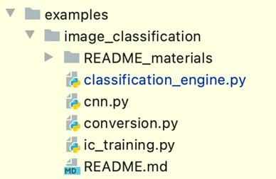

14 Federated Learning Implementation Client Side
FL Client Side Implementation
-
The client-side modules of a federated learning (FL) system can be implemented based on the system architecture, sequence, and procedure flow, as discussed earlier.
-
FL client-side functionalities can connect distributed machine learning (ML) applications that conduct local training and testing with an aggregator, through a communications module embedded in the client-side libraries.
-
In the example of using the FL client libraries in a local ML engine, the minimal engine package example will be discussed, with dummy ML models to understand the process of integration with the FL client libraries that are designed Here.
-
By following the example code about integration, you will understand how to actually enable the whole process related to the FL client side, as discussed earlier, while an analysis on what will happen with the minimal example will be discussed in Running the Federated Learning System and Analyzing the Results.
-
Here, an overview of the design and implementation principle of FL client-side functionalities used in local ML engines will be discussed. you will be able to code the FL client-side modules and libraries as well as distributed local ML engines, such as image classification with Convolutional Neural Networks (CNNs).
-
Here, we will cover the following topics:
-
Implementing FL client-side main functionalities
-
Designing FL client libraries
-
Local ML engine integration into an FL system
-
An example of integrating image classification into an FL system
Technical requirements
All the code files introduced Here can be found on GitHub ([https://github.com/keshavaspanda/simple-fl]{.underline}).
An overview of FL client-side components
-
The architecture of an FL client as an agent was introduced earlier.
-
Here, we will introduce code that realizes the basic functionalities of an FL client.
-
The client side of software architecture is simplified here, where only the client.py file can be used in this example, together with supporting functions from the lib/util folder, as shown in Figure 5.1:
 {width="3.751388888888889in"
height="3.3020833333333335in"}
{width="3.751388888888889in"
height="3.3020833333333335in"}
Figure 5.1 -- Python software components for an FL client as an agent
- The following section gives a brief description of the Python files for an agent of the FL system.
Distributed agent-side code
- For the agent side, there is one main file, client.py, in the fl_main/agent directory that deals with most of the FL client-side functionalities.
FL client code (client.py)
-
The client.py file in the agent folder has functions to participate in an FL cycle, an ML model exchange framework with an aggregator, and push and polling mechanisms to communicate with the aggregator.
-
The client's functions can also serve as interfaces between the local ML application and the FL system itself, providing FL client-side libraries to the ML engine.
-
This is the main code that connects locally trained ML models to the FL server and aggregator.
-
You need to prepare a local ML application by yourself, and we will help you understand how to integrate your ML engine into an FL system using the FL client libraries, which is another main topic of This section.
lib/util code
- An explanation of the supporting Python code (communication_handler.py, data_struc.py, helpers.py, messengers.py, and states.py) as internal libraries will be covered in Appendix, Exploring Internal Libraries.
Configuration of an agent
- The following is an example of client-side configuration parameters saved as config_agent.json in the code we are using:
{
\"aggr_ip\": \"localhost\",
\"reg_socket\": \"8765\",
\"model_path\": \"./data/agents\",
\"local_model_file_name\": \"lms.binaryfile\",
\"global_model_file_name\": \"gms.binaryfile\",
\"state_file_name\": \"state\",
\"init_weights_flag\": 1,
\"polling\": 1
}
-
CopyExplain
-
The aggregator's IP (aggr_ip) and its port number (reg_socket) are used to get connected to the FL server, where the aggregation of the local models happens. In addition, the model path parameter, model_path, specifies the location of both the local model (named local_model_file_name) and the global model (named global_model_file_name).
-
The local and global models are stored as binary files (lms.binaryfile and gms.binaryfile in this example). The state file (named state_file_name) writes the local state of the client that defines waiting for the global models, training the models, sending the trained models, and so on. init_weights_flag is used when the system operator wants to initialize the global model with certain weights.
-
If the flag is 1, the agent will send the pre-configured model; otherwise, the model will be filled with zeros on the aggregator side. The polling flag (polling) concerns whether to utilize the polling method or not for communication between agents and an aggregator.
-
Now that we've discussed FL client-side modules, let's look into the actual implementation and some code to realize the functionalities of an FL client.
Implementing FL client-side main functionalities
-
In this section, we will explain how you can implement basic FL client-side code, which is described in the client.py file in the agent directory.
-
By learning about this client-side code, you will understand how to implement an agent's registration process, model exchange synchronization, and push/polling mechanisms, as well as the communication protocol between the agent and aggregator, with some functions that will be called from other ML applications as Application Programming Interfaces (APIs).
-
Let's first see what libraries will be imported for implementing FL client functions.
Importing libraries for an agent
- In this client.py file example, the agent imports general libraries such as asyncio and time (a detailed explanation of which is out of scope for this book):
import asyncio, time, logging, sys, os
from typing import Dict, Any
from threading import Thread
from fl_main.lib.util.communication_handler import \
init_client_server, send, receive
from fl_main.lib.util.helpers import read_config, \
init_loop, save_model_file, load_model_file, \
read_state, write_state, generate_id, \
set_config_file, get_ip, compatible_data_dict_read, \
generate_model_id, create_data_dict_from_models, \
create_meta_data_dict
from fl_main.lib.util.states import ClientState, \
AggMsgType, ParticipateConfirmationMSGLocation, \
GMDistributionMsgLocation, IDPrefix
from fl_main.lib.util.messengers import \
generate_lmodel_update_message, \
generate_agent_participation_message, \
generate_polling_message
CopyExplain
-
As for the communication_handler, helpers, states, and messengers libraries imported from fl_main.lib.util that are designed for enabling the FL general functionalities, please refer to the Appendix, Exploring Internal Libraries.
-
After importing the necessary libraries, you will define the Client class.
Defining the Client class
- Let's define the Client class that implements the core functionalities of an FL client, including the participation mechanism of the agent itself, the model exchange framework, and a communication interface between the agent and an aggregator, as well as libraries provided for use in the agent-side local ML engine:
class Client:
\"\"\"
Client class instance with FL client-side functions
and libraries used in the agent\'s ML engine
\"\"\"
CopyExplain
- Then, you will initialize the Client class under the __init__ function, as discussed in the next section.
Initializing the client
- The following code inside the __init__ constructor is an example of the initialization process of the client:
def __init__(self):
self.agent_name = \'default_agent\'
self.id = generate_id()
self.agent_ip = get_ip()
self.simulation_flag = False
if len(sys.argv) > 1:
self.simulation_flag = bool(int(sys.argv[1]))
config_file = set_config_file(\"agent\")
self.config = read_config(config_file)
self.aggr_ip = self.config[\'aggr_ip\']
self.reg_socket = self.config[\'reg_socket\']
self.msend_socket = 0
self.exch_socket = 0
if self.simulation_flag:
self.exch_socket = int(sys.argv[2])
self.agent_name = sys.argv[3]
self.model_path = f\'{self.config[\"model_path\"]}
/{self.agent_name}\'
if not os.path.exists(self.model_path):
os.makedirs(self.model_path)
self.lmfile = self.config[\'local_model_file_name\']
self.gmfile = self.config[\'global_model_file_name\']
self.statefile = self.config[\'state_file_name\']
self.round = 0
self.init_weights_flag = \
bool(self.config[\'init_weights_flag\'])
self.is_polling = bool(self.config[\'polling\'])
CopyExplain
-
First, the client generates a unique ID for itself as an identifier that will be used in many scenarios to conduct FL.
-
Second, the client gets its own IP address by using the get_ip() function.
-
Also, simulation runs are supported in this implementation exercise, where we can run all the FL system components of a database, server, and multiple agents within one machine. If simulation needs to be done, then the simulation_flag parameter needs to be True (refer to the README file on GitHub for how to set up a simulation mode).
-
Then, self.cofig reads and stores the information of config_agent.json.
-
The client then configures the aggregator's information to connect to its server, where self.aggr_ip reads the IP address of the aggregator machine or instance from the agent configuration file.
-
After that, the reg_socket port will be set up, where reg_socket is used for registration of the agent, together with an aggregator IP address stored as self.aggr_ip. The reg_socket value in this example can be read from the agent configuration file as well.
-
msend_socket, which is used in the model exchange routine to send the local ML models to the aggregator, will be configured after participating in the FL process by sending a message to the FL server and receiving the response.
-
exch_socket is used when communication is not in polling mode for receiving global models sent from the aggregator, together with an agent IP address stored as self.agent_ip.
-
exch_socket in this example can either be read from the arguments from the command line or decided by the aggregator, depending on the simulation mode.
-
In this example, when the aggregator is set to be able to push messages to the connected agents, which is not the case when polling mode is on, exch_socket can be dynamically configured by the aggregator.
-
self.model_path stores the path to the local and global models and can either be read from the agent configuration file or arguments from the command line, depending on the simulation mode as well. If there is no directory to save those model files, it makes sure to create the directory.
-
self.lmfile, self.gmfile, and self.statefile are the filenames for local models, global models, and the state of the client respectively, and read from the configuration file of the agent. In particular, in self.statefile, the value of ClientState is saved. ClientState is the enumeration value of the client itself where there is a state waiting for the global model (waiting_gm), a state for local training (training), a state for sending local models (sending), and a state for having the updated global models (gm_ready).
-
The round information of the FL process, defined as self.round, is initialized as 0 and later updated as the FL round proceeds with model aggregation, where the aggregator will notify the change of the round usually.
-
self.init_weights_flag is the flag used when a system operator wants to initialize a global model with certain parameters, as explained in the configuration of the agent.
-
The self.is_polling flag concerns whether to use the polling method in communication between the agents and aggregator or not. The polling flag must be the same as the one set up on the aggregator side.
-
The code about the __init__ constructor discussed here can be found in client.py in the fl_main/agent folder on GitHub ([https://github.com/keshavaspanda/simple-fl]{.underline}).
-
Now that we have discussed how to initialize a client-side module, in the next section, we will look into how the participation mechanism works with some sample code.
Agent participation in an FL cycle
-
This participation or registration process is needed for an agent to be able to participate in an FL process together with other agents. Therefore, the agent needs to be added to the list of authorized agents that can send locally trained ML models to an aggregator.
-
The asynchronous participate function sends the first message to an aggregator to join the FL cycle and will receive state and communication information, such as socket numbers from the aggregator.
-
An agent knows the IP address and port number to join the FL platform through the config_agent.json file. When joining the FL platform, an agent sends a participation message that contains the following information:
-
id: A unique identifier of an agent itself.
-
model_id: A unique identifier of models to be sent to an aggregator.
-
models: A dictionary of models keyed by model names. The weights of models need not be trained if init_flag is False, since it is only used by an aggregator to remember the shapes of models.
-
init_weights_flag: A Boolean flag to indicate whether the sent model weights should be used as a base model. If it is True and there are no global models ready, an aggregator sets this set of local models as the first global models and sends it to all agents.
-
simulation_flag: This is True if it is a simulation run; otherwise, it is False.
-
exch_socket: The port number waiting for global models from the aggregator.
-
gene_time: The time that models are generated.
-
performance_dict: Performance data related to models in a dictionary format.
-
agent_ip: The IP address of an agent itself.
async def participate(self):
data_dict, performance_dict = \
load_model_file(self.model_path, self.lmfile)
_, gene_time, models, model_id = \
compatible_data_dict_read(data_dict)
msg = generate_agent_participation_message(
self.agent_name, self.id, model_id, models,
self.init_weights_flag, self.simulation_flag,
self.exch_socket, gene_time, performance_dict,
self.agent_ip)
resp = await send(msg, self.aggr_ip, self.reg_socket)
self.round = resp[ \
int(ParticipateConfirmaMSGLocation.round)]
self.exch_socket = resp[ \
int(ParticipateConfirmationMSGLocation.exch_socket)]
self.msend_socket = resp[ \
int(ParticipateConfirmationMSGLocation.recv_socket)]
self.id = resp[ \
int(ParticipateConfirmationMSGLocation.agent_id)]
self.save_model_from_message(resp, \
ParticipateConfirmationMSGLocation)
CopyExplain
-
The agent reads the local models to tell the structure of the ML models to the aggregator, and the initial model does not necessarily need to be trained. data_dict and performance_dict store the models and their performance data respectively.
-
Then, a message, msg, containing information such as the ML models and its model_id, is packaged using the generate_agent_participation_message function.
-
When sending the message, in this example, the WebSocket is constructed using the aggregator's IP address (aggr_ip) and the registration port number (reg_socket) to be connected to the aggregator.
-
After sending the message to the aggregator via an asynchronous send function imported from communication_handler, the agent receives a response message, resp, from the aggregator. The response will include the round info, the port number to receive the global models' exch_socket, the port number to send the local models to the aggregator's msend_socket, and an updated agent ID.
-
Finally, the global model within the response message is saved locally by calling the save_model_from_message function.
-
The participation mechanism of an agent has been explained. In the next section, we will learn about the framework of model exchange synchronization.
Model exchange synchronization
- Model exchange synchronization, as shown in the following code, is for checking the state of the agent and calling a proper function based on the state:
Async def model_exchange_routine(self):
while True:
await asyncio.sleep(5)
state = read_state(self.model_path, self.statefile)
if state == ClientState.sending:
await self.send_models()
elif state == ClientState.waiting_gm:
if self.is_polling == True:
await self.process_polling()
else: pass
elif state == ClientState.training: pass
elif state == ClientState.gm_ready: pass
else: pass
CopyExplain
-
Basically, this process is always running while the client is alive, whereas the while loop is used periodically to check the client's state and proceed with the next steps if necessary.
-
In the while loop, after waiting a few seconds, it first checks the client state by the read_state function. The parameters in the read_state function are to locate the state file stored in the local environment.
-
As mentioned, ClientState has the enumeration value of the client state itself, defining a state for sending local models (sending), a state waiting for the global model (waiting_sgm), a state for local training (training), and a state for receiving the updated global models (gm_ready).
-
If the client is in the sending state (state == ClientState.sending), it means it is ready to send the locally trained model to the aggregator. Therefore, the agent calls the send_models function to send the locally trained ML model to the aggregator.
-
When the state is waiting_gm (state == ClientState.waiting_gm), it either proceeds with process_polling to poll from the agent to the aggregator if polling mode is on, or just does nothing if polling mode is off.
-
If the client is in the training state (state == ClientState.training), it means that the client is training the local model now and just waits for a few seconds, printing the training status if necessary. You can also add any procedure if needed.
-
If the client is in the gm_ready state (state == ClientState.gm_ready), it means that the client received the global model. This state will be handled by a local ML application, and it does nothing but show the readiness of the global models.
-
In the next section, we will talk about how the push and polling mechanisms can be implemented for an FL cycle.
Push and polling implementation
-
Once an agent is initialized and confirmed for participation in an FL process, it starts waiting for the global models sent from an aggregator. There are two ways to receive global models from the aggregator: the push method and the polling method. Although the Secure Sockets Layer (SSL) or Transport Layer Security (TSL) frameworks are not implemented in FL client-side code here for simplification, it is recommended to support them to secure constant communication.
-
Let's look into the mechanism for each communication framework.
-
The push method from aggregator to agent
-
With the push method, the aggregator will push the message that includes global models to all the connected agents right after the global models are generated.
-
The following code shows the push mechanism accepting and saving global models from the aggregator:
async def wait_models(self, websocket, path):
gm_msg = await receive(websocket)
self.save_model_from_message( \
gm_msg, GMDistributionMsgLocation)
CopyExplain
-
The wait_models asynchronous function accepts websocket as a parameter. When the aggregator sends a message to the agent, it receives the gm_msg message through await recieve(websocket) and saves the global models locally by calling the save_model_from_message function, as defined in the Toward designing FL client libraries section.
-
The polling method from agent to aggregator
-
With the polling method, an agent will keep asking (polling) an aggregator to see whether global models are already formed or not. Once it has been created and is ready to be sent to the connected agents, the polled message will be returned to the agent with the updated global models in the response.
-
The following code about the process_polling asynchronous function illustrates the polling method:
async def process_polling(self):
msg = generate_polling_message(self.round, self.id)
resp = await send(msg, self.aggr_ip, self.msend_socket)
if resp[int(PollingMSGLocation.msg_type)] \
== AggMsgType.update:
self.save_model_from_message(resp, \
GMDistributionMsgLocation)
else: pass
CopyExplain
-
It first generates the polling message with the generate_polling_message function to be sent to the aggregator. After receiving the response message, resp, from the aggregator, if the message type is AggMsgType.update, meaning the response message contains the updated global models, it calls the save_model_from_message function. Otherwise, it does nothing.
-
The aforementioned functions are the basic but core features of an FL client, and those functions need to be efficiently used by a user-side ML application as libraries.
-
Now that FL client design, including initialization, participation, and model exchanges, has been explained, we will learn about how to design FL client libraries.
Designing FL client libraries
-
In this section, we will explain how to package essential functions to be provided as libraries to users. In this example, the simplest way to package them as libraries will be discussed.
-
This will need to be expanded, depending on your needs and the design of your own FL client framework. By packaging FL client-side modules as libraries, developers will be easily able to integrate the FL client's functions into the local ML engine.
-
Let's start with how to define a library to start and register an FL client.
Starting FL client core threads
-
For local ML application developers to be able to integrate FL client-related functions, they sometimes need to be packaged as threading functions.
-
The following code to register an agent in the FL system simply puts a participate function into the run_until_complete function of an asyncio.get_event_loop function:
def register_client(self):
asyncio.get_event_loop().run_until_complete( \
self.participate())
CopyExplain
-
Also, the start_wait_model_server function is packaged, as shown in the following code block, where the Thread function takes care of the constant run.
-
This way, you will be able to run the local ML module in parallel and receive global models in the wait_models thread when the FL system is in push communication mode:
def start_wait_model_server(self):
th = Thread(target = init_client_server, \
args=[self.wait_models, self.agent_ip, \
self.exch_socket])
th.start()
CopyExplain
- Similarly, the start_model_exhange_server function can be a thread to run a model exchange routine to synchronize the local and global models, while the local ML module is running in parallel. You can just call the following start_model_exchange_server function as a library to enable this functionality:
def start_model_exchange_server(self):
self.agent_running = True
th = Thread(target = init_loop, \
args=[self.model_exchange_routine()])
th.start()
CopyExplain
- Finally, it may be helpful to package all these three functions to execute at the same time when they are called outside the Client class. Therefore, we introduce the following code concerning start_fl_client that aggregates the functions of registering agents, waiting for global models and a model exchange routine to start the FL client core functions:
def start_fl_client(self):
self.register_client()
if self.is_polling == False:
self.start_wait_model_server()
self.start_model_exchange_server()
CopyExplain
- The initiation of the FL client is now packaged into start_fl_client. Next, we will define the libraries of saved ML models.
Saving global models
-
While the load and save model functions are provided by the helper functions in lib/util, which will be explained later in the Appendix, Exploring Internal Libraries, it is helpful to provide an interface for ML developers to save global models from a message sent from an aggregator.
-
The following save_model_from_message function is one that extracts and saves global models in an agent and also changes the client state to gm_ready. This function takes the message (msg) and message location (MSG_LOC) information as parameters:
def save_model_from_message(self, msg, MSG_LOC):
data_dict = create_data_dict_from_models( \
msg[int(MSG_LOC.model_id)],
msg[int(MSG_LOC.global_models)],
msg[int(MSG_LOC.aggregator_id)])
self.round = msg[int(MSG_LOC.round)]
save_model_file(data_dict, self.model_path, \
self.gmfile)
self.tran_state(ClientState.gm_ready)
CopyExplain
-
The global models, model ID, and aggregator ID are extracted from the message and put into a dictionary using the create_data_dict_from_models library. The round information is also updated based on the received message.
-
Then, the received global models are saved to the local file using the save_model_file library, in which the data dictionary, model path, and global model file name are specified to save the models.
-
After receiving the global models, it changes the client state to gm_ready, the state indicating that the global model is ready for the local ML to be utilized by calling the tran_state function, which will be explained in the next section.
-
With the function of saving global models defined, we are ready to move on to how to manipulate the client state in the next section.
Manipulating client state
-
In order to manipulate the client state so that it can logically handle local and global models, we prepare the read_state and tran_state functions, which can be accessed both from inside and outside the code.
-
The following read_state function reads the value written in statefile, stored in the location specified by model_path. The enumeration value of ClientState is used to change the client state:
def read_state(self) -> ClientState:
return read_state(self.model_path, self.statefile)
CopyExplain
- The following tran_state function changes the state of the agent. In this code sample, the state is maintained in the local state file only:
def tran_state(self, state: ClientState):
write_state(self.model_path, self.statefile, state)
CopyExplain
- Next, let's define the functions that can send local models to an aggregator.
Sending local models to aggregator
- The following asynchronous send_models function is about sending models that have been saved locally to the aggregator:
async def send_models(self):
data_dict, performance_dict = \
load_model_file(self.model_path, self.lmfile)
, _, models, model_id = \
compatible_data_dict_read(data_dict)
msg = generate_lmodel_update_message( \
self.id, model_id, models, performance_dict)
await send(msg, self.aggr_ip, self.msend_socket)
self.tran_state(ClientState.waiting_gm)
CopyExplain
-
It first extracts data_dict and performance_dict using the load_model_file helper function and then pulls out the models and their ID from data_dict, based on the compatible_data_dict_read function. Then, the message is packaged with the generate_lmodel_update_message library and sent to the aggregator, with the send function from communication_handler. After that, the client state is changed to waiting_gm by the tran_state function. Again, the SSL/TSL framework can be added to secure communication, which is not implemented here to keep the FL client-side coding simple.
-
The following send_initial_model function is called when you want to send the initial base model to an aggregator of the model architecture for registration purposes. It takes initial models, the number of samples, and performance value as input and calls setup_sending_model, which will be explained later in this section:
def send_initial_model(self, initial_models, \
num_samples=1, perf_val=0.0):
self.setup_sending_models( \
initial_models, num_samples, perf_val)
CopyExplain
- The following send_trained_model function is called when you want to send trained local models to the aggregator during the FL cycle. It takes trained models, the number of samples, and performance value as input and only calls setup_sending_model if the client state is not gm_ready:
def send_trained_model(self, models, \
num_samples, perf_value):
state = self.read_state()
if state == ClientState.gm_ready:
pass
else:
self.setup_sending_models( \
models, num_samples, perf_value)
CopyExplain
- The following setup_sending_models function is designed to serve as an internal library to set up sending locally trained models to the aggregator. It takes parameters of models as np.array, the number of samples as an integer, and performance data as a float value:
def setup_sending_models(self, models, \
num_samples, perf_val):
model_id = generate_model_id( \
IDPrefix.agent, self.id, time.time())
data_dict = create_data_dict_from_models( \
model_id, models, self.id)
meta_data_dict = create_meta_data_dict( \
perf_val, num_samples)
save_model_file(data_dict, self.model_path, \
self.lmfile, meta_data_dict)
self.tran_state(ClientState.sending)
CopyExplain
-
Basically, this function creates a unique model ID with the generate_model_id helper function, data_dict to store the local ML models data created with the create_data_dict_from_models helper function, and meta_data_dict to store the performance data created with the create_meta_data_dict helper function. And then, all the aforementioned data related to the models and performance is saved locally with the save_model_file function, in the location specified with self.model_path. Then, it changes the client state to sending so that the mode_exchange_routine function can note the change in the client state and start sending trained local models to the aggregator.
-
Now that we know about the libraries to send ML models to the aggregator, let's learn about an important function to wait for a global model on the agent side.
Waiting for global models from an aggregator
- The following wait_for_global_model function is very important to conduct an FL cycle consistently:
def wait_for_global_model(self):
while (self.read_state() != ClientState.gm_ready):
time.sleep(5)
data_dict, _ = load_model_file( \
self.model_path, self.gmfile)
global_models = data_dict[\'models\']
self.tran_state(ClientState.training)
return global_models
CopyExplain
-
The principle is that the function waits until the client state becomes gm_ready. The transition of the client state to gm_ready happens when the global model is received on the agent side. Once the client state changes to gm_ready, it proceeds to load global models from data_dict, extracted with the load_model_file function, changes the client state to training, and returns the global models to the local ML module.
-
We have discussed how to design the libraries of FL client-side functions. In the next section, we will discuss how to integrate those libraries into a local ML process.
Local ML engine integration into an FL system
-
The successful integration of FL client libraries into a local ML engine is key to conducting FL in distributed environments later on.
-
The minimal_MLEngine.py file in the examples/minimal directory found in the GitHub repository at [https://github.com/tie-set/simple-fl]{.underline}, as shown in Figure 5.2, provides an example of integrating FL client-side libraries into a minimal ML engine package:
{width="6.268055555555556in" height="1.1395833333333334in"}
Figure 5.2 -- The minimal ML engine package
- Next, we will explain what libraries need to be imported into the local ML engine in the following section.
Importing libraries for a local ML engine
-
The following code shows the importing process, where general libraries such as numpy, time, and Dict are imported first. The key part of this process is that Client is imported from the client.py file in the fl_main.agent folder. This way, a developer does not need to know too much about the code inside an FL system and just calls the important functionalities defined as libraries, as discussed in the Toward designing FL client libraries section.
-
We will not cover the pip installation packaging here in this book, but it is possible to host the client-side code with either a private or public PyPI server:
import numpy as np
import time, logging, sys
from typing import Dict
from fl_main.agent.client import Client
CopyExplain
- After importing the necessary libraries, let's look at the functions defined for local training and testing.
Defining the ML models, training, and test functions
-
You first define the models, training, and testing functions to be integrated into the FL system. In this code example, we will use dummy models and training/testing functions, allowing users to be able to understand the minimal FL procedure without being bothered by specific ML complications.
-
The following function called init_models returns the templates of models (in a dictionary format) to inform the ML model structure. The models do not need to be trained necessarily. In this case, the models have two layers defined by model1 and model2, where some random NumPy array is assigned to each layer, as follows:
def init_models() -> Dict[str,np.array]:
models = dict()
models[\'model1\'] = np.array([[1, 2, 3], [4, 5, 6]])
models[\'model2\'] = np.array([[1, 2], [3, 4]])
return models
CopyExplain
- After initializing the models, you will design the following training function that can be a placeholder function for each ML application:
def training(models: Dict[str,np.array],
init_flag: bool = False) -> Dict[str,np.array]:
# return templates of models to tell the structure
# This model is not necessarily actually trained
if init_flag:
return init_models()
# ML Training. In this example, no actual training.
models = dict()
models[\'model1\'] = np.array([[1, 2, 3], [4, 5, 6]])
models[\'model2\'] = np.array([[1, 2], [3, 4]])
return models
CopyExplain
-
The logic of this function should be in the order of taking models as input, training them, and returning trained local models. As input parameters, it takes models with the Dict[str,np.array] format and the init_flag Boolean value, indicating whether it is the initialization step or not.
-
init_flag is True when you want to call and return the predefined init_models, and it is False if it's an actual training step.
-
Eventually, this function returns the trained models that are decomposed into NumPy arrays, with a dictionary of Dict[str,np.array] in this example.
-
In this dummy example, we are just giving you dummy models that skip the actual training process.
-
Then, the following compute_performance function is designed to compute the performance of models given a set of models and a test dataset:
def compute_performance(models: Dict[str,np.array], \
testdata) -> float:
# replace with actual performance computation logic
accuracy = 0.5
return
CopyExplain
-
Again, in this example, just a dummy accuracy value is given, 0.5, to keep things simple.
-
Then, you may want to define the following judge_termination function to decide the criteria to finish the training process and exit from the FL process:
def judge_termination(training_count: int = 0,
global_arrival_count: int = 0) -> bool:
# Depending on termination criteria, change the return bool value
# Call a performance tracker to check if the current models satisfy the required performance
return True
CopyExplain
-
It is up to you how to design this termination condition. This function takes parameters such as the number of completed training processes (training_count), the number of times it received global models (global_arrival_count), and so on, returning a Boolean value where the flag is True if it continues the FL process and False if it stops. Here, it just gives a True Boolean value, meaning the FL process will not stop unless the agent is forced to stop outside of this function.
-
If preparing the test data is needed, you can define a function such as prep_test_data:
def prep_test_data():
testdata = 0
return
CopyExplain
-
In this example, it is just set as 0.
-
Now that the necessary functions for testing and training are defined, we will integrate client libraries into the local ML engine to run the FL agent working with the FL server-side components, such as an aggregator and a database.
Integration of client libraries into your local ML engine
-
Now, everything is ready to start your very first FL process, although the models, training, and testing functions are set with dummy variables.
-
The very first thing to do is to create a Client instance as follows so that you can call its libraries:
# Step1: Create Client instance
cl = Client()
CopyExplain
Second, you create the initial_models with the training function, as follows:
# Step2: Create template models (to tell the shapes)
initial_models = training(dict(), init_flag=True)
CopyExplain
- After that, it sends the initial models to the FL aggregator by calling cl.send_initial_model, with initial_models as a parameter:
# Step3: Send initial models
cl.send_initial_model(initial_model)
CopyExplain
- Then, let's just start the client-side FL process by calling cl.start_fl_client(). As explained earlier in the Starting FL client core threads section, this function can start three processes at the same time: registering the agent, waiting for global models, and the model exchange routine:
# Step4: Start the FL client
cl.start_fl_client()
CopyExplain
- Then, we design the client-side FL cycle of local training/testing and sending/receiving models by effectively integrating the several FL client libraries, as follows:
# Step5: Run the local FL loop
training_count, gm_arrival_count = 0, 0
while judge_termination(training_count, gm_arrival_count):
global_models = cl.wait_for_global_model()
gm_arrival_count += 1
global_model_performance_data = \
compute_performance(global_models, prep_test_data())
models = training(global_models)
training_count += 1
perf_value = compute_performance( \
models, prep_test_data())
cl.send_trained_model(models, 1, perf_value)
CopyExplain
-
We use a while loop and the judge_termination function to check whether the system needs to leave the loop. It is up to you to use training_count and gm_arrival_count to judge the termination of the FL cycle.
-
Then, the agent proceeds to wait for the global models with cl.wait_for_global_model(). Upon the arrival of the global models from the aggregator, it extracts global_models, increments gm_arrival_count, and sets the client state to the training state in the wait_for_global_model function.
-
Next, global_model_performance_data is calculated with the compute_performance function, taking global_models and prep_test_data as input.
-
While executing training(global_models) in the training state, the client might receive new global models from the aggregator. This scenario happens when the client's local training was too slow, and the aggregator decided to utilize other local models to create a new set of global models. If the new global models have already arrived at the agent, the client's state is changed to gm_ready and the current ML model being trained will be discarded.
-
After the local training phase has finished with models generated by training(global_models), an agent increments training_count and calculates the performance data, perf_value, of the current ML model with the compute_performance function.
-
Then, the agent tries to upload the trained local models to the aggregator via cl.send_trained_model, taking the trained models and the performance value calculated previously as parameters.
-
In the send_trained_model function, the client state is set to sending. Once the client's model_exchange_routine observes the state transition to the sending state, it sends the trained local models (stored as a binary file) to the aggregator. After sending the models, it goes back to the waiting_gm state in the send_models function.
-
After sending the local models, the aggregator stores the uploaded local models in its buffers and waits for another round of global model aggregation, until enough local models are uploaded by agents.
-
In the next section, we will briefly talk about how to integrate image classification ML into the FL system we have discussed.
An example of integrating image classification into an FL system
-
We learned about how to initiate an FL process with a minimal example. In this section, we will give a brief example of FL with image classification (IC) using a CNN.
-
First, the package that contains the image classification example code is found in the examples/image_classification/ folder in the GitHub repository at [https://github.com/keshavaspanda/simple-fl]{.underline}, as shown in Figure 5.3:
{width="4.041666666666667in" height="2.627083333333333in"}
Figure 5.3 -- The image classification package
-
The main code in charge of integrating the IC algorithms into the FL systems is found in the classification_engine.py file.
-
When importing the libraries, we use a couple of extra files that include CNN models, converter functions, and data managers related to IC algorithms. The details are provided in the GitHub code at [https://github.com/keshavaspanda/simple-fl]{.underline}.
-
Next, let's import some standard ML libraries as well as client libraries from the FL code we discussed:
import logging
import numpy as np
import torch
import torch.nn as nn
import torch.optim as optim
from typing import Dict
from .cnn import Net
from .conversion import Converter
from .ic_training import DataManger, execute_ic_training
from fl_main.agent.client import Client
CopyExplain
- In this case, we define TrainingMetaData, which just gives you the amount of training data that will be sent to the aggregator and used when conducting the FedAvg algorithm. The aggregation algorithm was discussed in section 4, Federated Learning Server Implementation with Python, as well as in section 7, Model Aggregation:
class TrainingMetaData:
# The number of training data used for each round
# This will be used for the weighted averaging
# Set to a natural number > 0
num_training_data = 8000
CopyExplain
- The content of the init_models function is now replaced with a CNN that is converted into a NumPy array. It returns the template of the CNN in a dictionary format to inform the structure:
def init_models() -> Dict[str,np.array]:
net = Net()
return Converter.cvtr().convert_nn_to_dict_nparray(net)
CopyExplain
-
The training function, training, is now filled with actual training algorithms using the CIFAR-10 dataset. It takes the models and init_flag as parameters and returns the trained models as Dict[str,np.array]. The init_flag is a bool value, where it is True if it's at the initial step and False if it's an actual training step. When preparing for the training data, we use a certain threshold for training due to batch size. In this case, the threshold is 4.
-
Then, we create a CNN-based cluster global model with net = Converter.cvtr().convert_dict_nparray_to_nn(models).
-
We define the loss function and optimizer as the following:
criterion = nn.CrossEntropyLoss()
optimizer = optim.SGD(net.parameters(), lr=0.001, momentum=0.9)
CopyExplain
-
Then, the actual training will be conducted with trained_net = execute_ic_training(DataManger.dm(), net, criterion, optimizer), where the actual code of the IC training can be found in the ic_training.py file.
-
After the training, the converted models will be returned.
-
The algorithm is summarized as follows:
def training(models: Dict[str,np.array], \
init_flag: bool=False) -> Dict[str,np.array]:
if init_flag:
DataManger.dm( \
int(TrainingMetaData.num_training_data / 4))
return init_models()
net = \
Converter.cvtr().convert_dict_nparray_to_nn(models)
criterion = nn.CrossEntropyLoss()
optimizer = optim.SGD(net.parameters(), \
lr=0.001, momentum=0.9)
trained_net = execute_ic_training(DataManger.dm(), \
net, criterion, optimizer)
models = Converter.cvtr(). \
convert_nn_to_dict_nparray(trained_net)
return models
CopyExplain
- The following compute_performance function is filled with an algorithm to calculate the accuracy, which is simple enough -- just divide the number of correct outcomes by the number of total labels. With a given set of models and a test dataset, it computes the performance of the models, with models and testdata as parameters:
def compute_performance(models: Dict[str,np.array], \
testdata, is_local: bool) -> float:
# Convert np arrays to a CNN
net = \
Converter.cvtr().convert_dict_nparray_to_nn(models)
correct, total = 0, 0
with torch.no_grad():
for data in DataManger.dm().testloader:
images, labels = data
_, predicted = torch.max(net(images).data, 1)
total += labels.size(0)
correct += (predicted == labels).sum().item()
acc = float(correct) / total
return acc
CopyExplain
- The judge_termination and prep_test_data functions are the same as the functions of the minimal examples.
Integration of client libraries into the IC example
-
Now, everything is ready to start the IC algorithm, and all the code to integrate the preceding functions is the same as that used in the previous Integration of client libraries into your local ML engine section.
-
Please look into the classification_engine.py file to make sure the code is the same, except for the part that shows the actual number of data samples that we are sending. This way, by just rewriting the preceding functions, you will be able to easily connect your own local ML application to the FL system that we have discussed here.
-
Please refer to the Running image classification and its analysis section, Running the Federated Learning System and Analyzing the Results, to check the results of running the code discussed in this section.
Summary
-
Here, we discussed FL client-side implementation. There are three basic but important functionalities when participating in the FL process, receiving global models sent from an aggregator with a push or polling mechanism, and sending local models to an aggregator after the local training process.
-
In order to effectively implement the client-side ML engines that cooperate with the FL aggregator, understanding the client state is important. The client states include a state waiting for the global model, a state indicating that local training is happening, a state showing the readiness to send local models, and a state for having the updated global models.
-
We also discussed the design philosophy of FL client-side libraries, where the core functions need to be effectively packaged to provide user-friendly interfaces for ML developers and engineers.
-
Last but not least, we learned how to actually use the FL client libraries to integrate a local ML engine into an FL system, where we used the minimal dummy example and IC example to understand the integration process itself.
-
In the next section, we will actually run the code that was introduced in this and previous sections so that we can dig into what is happening with the models, which are aggregated with a minimal example as well as an IC example.